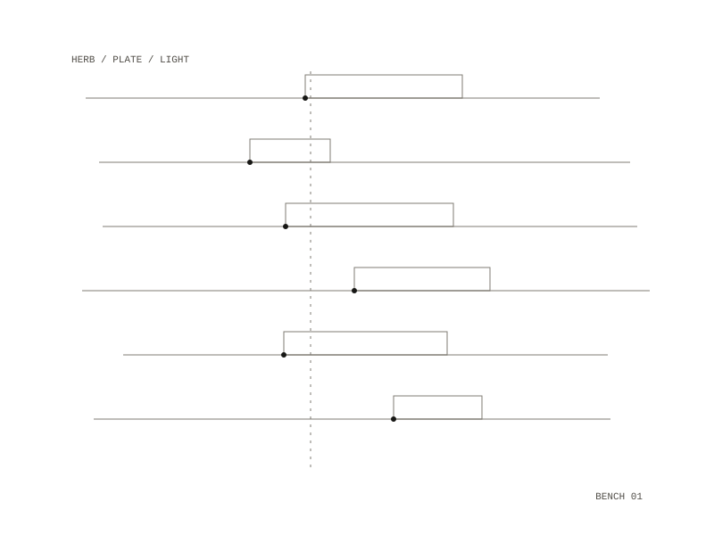

Herbal Science
A citizen-science research program on herbs, run by one researcher. It reads the biomedical and chemical literature on herbs, labels each claim by the strength of its evidence, and designs experiments that can be run at home, in a community biolab or at a university core facility.

The literature
The founding report treats the extracellular matrix as a signalling system and maps the evidence on plant compounds that act on the pathways behind fibrosis, cancer invasion and cartilage loss. Every claim carries a label: established, emerging, in vitro only, speculative or traditional. Other notes cover compounds studied for mitochondrial biogenesis, and three areas where herbs have barely been tested: LOX/LOXL2, YAP/TAZ and HA/CD44.
From observation to mechanism
A design framework sets the order of experiments: confirm an effect with a whole extract, profile its chemistry, split it by solvent polarity and test each fraction, isolate the active compound, then find its target. It sorts methods by access, from kitchen extraction and TLC at home, to cell culture in a community biolab, to mass spectrometry and NMR at a university core. Software drafts protocols and runs the analysis; a person approves each protocol, does the extraction, chromatography and bioassays, and decides which experiment runs next.
The first cell-culture design asks whether a standardised Centella asiatica extract raises collagen I production in fibroblasts, with a viability test first, a dose series and a collagen gel contraction assay.
Lemon balm at home
The home experiment asks whether the way lemon balm is harvested and dried changes how much rosmarinic acid its leaves carry. The design has four arms on the same tagged plants: a pilot that measures variation, five drying methods (fresh, shade, sun, 40 °C and 60 °C), morning against evening picking, and harvests every three to four days across two lunar cycles.
Rosmarinic acid glows blue under 365 nm light, so each plate is to be photographed with a phone beside a three-step dilution of a bought standard, and a script measures each spot against that series. Samples are to carry random four-character codes, and treatment and moon phase are joined to the results only at the end. The hypotheses and analysis are fixed before the first harvest, including the expectation that no lunar cycle remains once season and weather are removed. The results will describe one garden, one season and six plants.
thin-layer chromatography at home, read from phone photos under 365 nm light
lemon balm, sage, tulsi, calendula, Centella asiatica